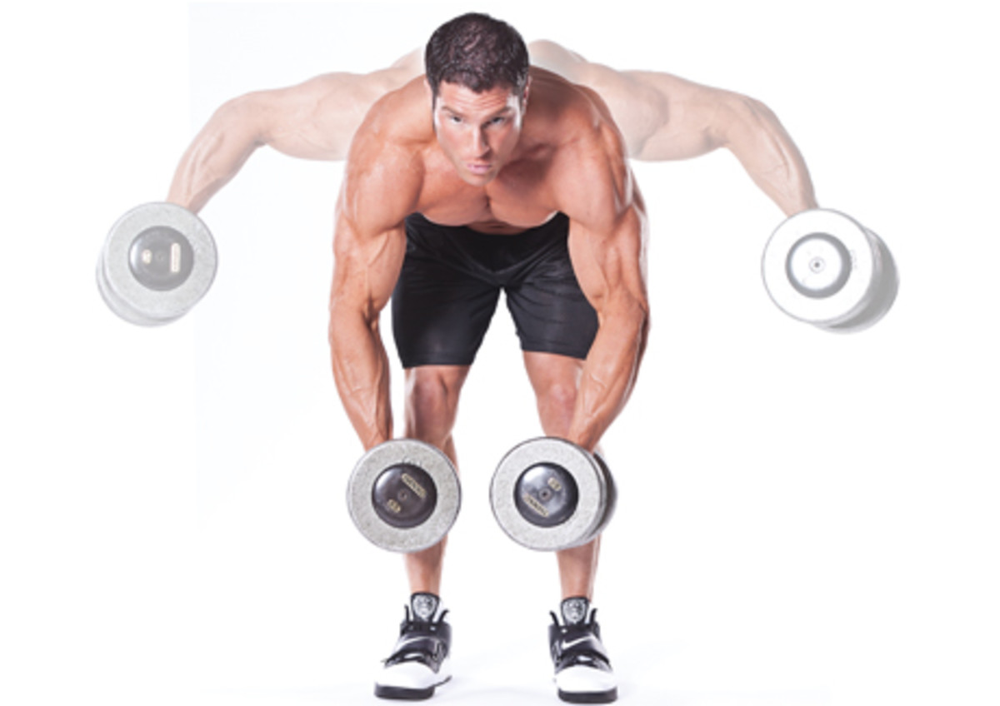
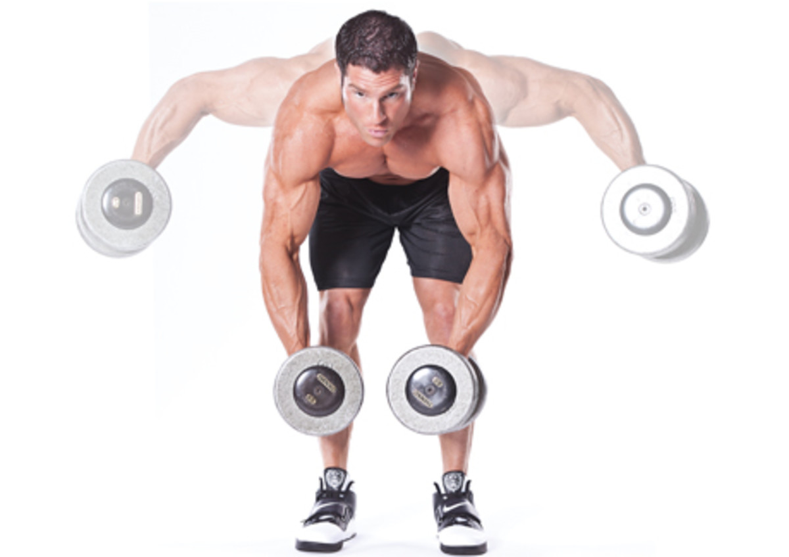
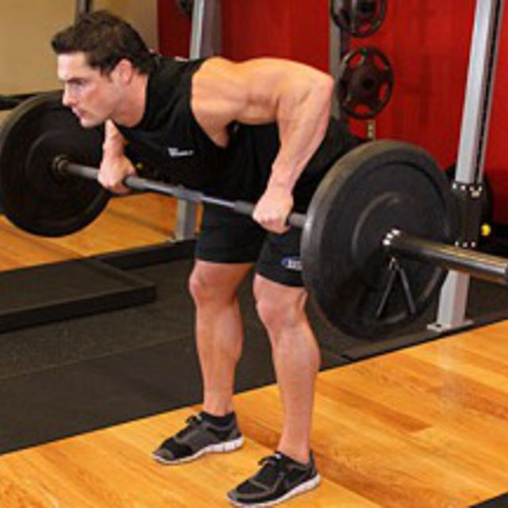
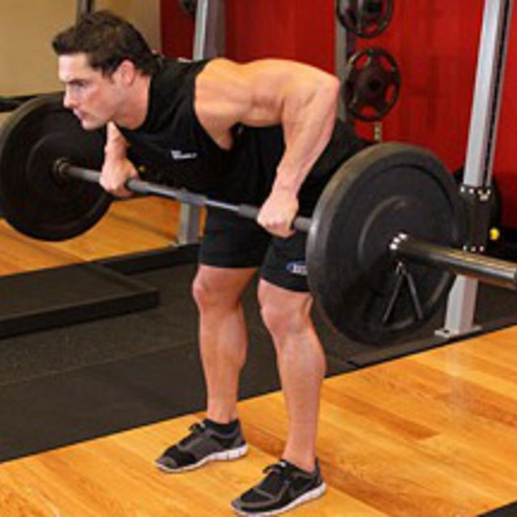

Shoulders 103


Hang Clean/Overhead Barbell Press X Upright Rows
(5 sets | 5/2x10, 5/2x10, 5/2x10, 5/2x10, 5/2x10)
Info: There will be 5 sets. Using a barbell, clean it from your hips to your shoulders, perform 2 overhead presses, then let it swing back down to your hips. Perform this movement 5 times (to total 10 total overhead presses). Immediately after, perform the upright rows with a weight attainable for 10 reps. Increase the weight of the presses 10-15% for sets 2 and 3 and decrease the weight 10-15% for sets 4 and 5.
Form: For the hang cleans, hold the bar shoulder width apart. Squat just a big and use the upward momentum to pull the bar up to your chest and catch it on your chest. While it is there, perform 2 overhead presses making sure that the bar is fully extended and that your arms create a straight line from your shoulders upward. As you come down, let the bar rest just below your clavicle before lowering the bar back to starting position.
For the upright row, use the same grip as the hang cleans. Using your mind-muscle connection, pull the bar up to your chin as if you are pulling through your elbows to engage your traps. Return the bar to starting position after a brief hold.

Dumbbell Lateral Raises
(3 sets | 15/12/10, 10/12/15, 15/12/10)
Info: There will be 3 sets. Grab 3 dumbells that differ by 5%. For the first and last set perform 15 lateral raises with the lightest weight, grab the middle weight for 12 reps, and finish with the heaviest weight for 10 reps. Do the reverse for the second set.
Form: Grab two dumbbells and hold them at your sides. With straight arms, raise the dumbbells to your sides until your body forms a “T” shape and then lower the dumbbells slowly to the starting position.
 

Seated Arnold Press X Dumbbell Rear Lateral Raises
(3 sets | 15x15, 12x12, 10x10)
Info: There will be 3 sets. Start with the seated arnold press and perform the rear lateral raises immediately after. Increase the weight 5-10% each set for both exercises and lower the repetitions.
Form: For the arnold press, grab two dumbells and start with them above your head with your palms facing outward. As you lower the weights, turn your palms until they are facing toward you at the bottom and the dumbells are in front of your face. As you return the weights to the starting position, turn your palms outwards again.
For the rear lateral raises, bend over so your torso is parallel with the ground. Let the dumbbells dead hang in front of you. With straight arms, extend them out to your sides so that at the top your arms are straight and are parallel with the ground and perpendicular with your body.
 

Shrugs X Dumbbell Lateral Raises X Rear Delt Rows
(2 sets | 15x15x15, 15x15x15)
Info: There will be 2 sets. Perform the shrugs immediately followed by lateral raises and immediately follow those with rear delt rows. Focus on the contraction and a 3-count negative for all three exercises.
Form: For the shrugs, grab two dumbells and hold them at your sides. With a straight arm, shrug your shoulders upward and slightly backward to focus the traps. Hold them at the top and the lower your shoulders slowly.
For the lateral raises, grab two dumbbells and hold them at your sides. With straight arms, raise the dumbbells to your sides until your body forms a “T” shape and then lower the dumbbells slowly to the starting position.
For the rear delt rows, lean over so your upper body is parallel with the ground and grip a bar. Using your mind-muscle connection, pull the bar toward your upper chest as if you are pulling it through your elbows and attempt not to engage your upper back muscles.. This will focus the rear delts.